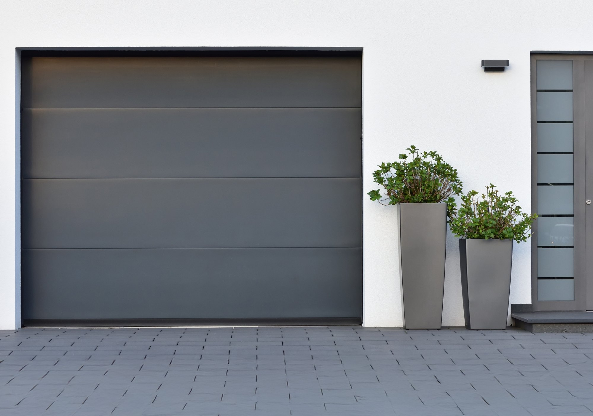
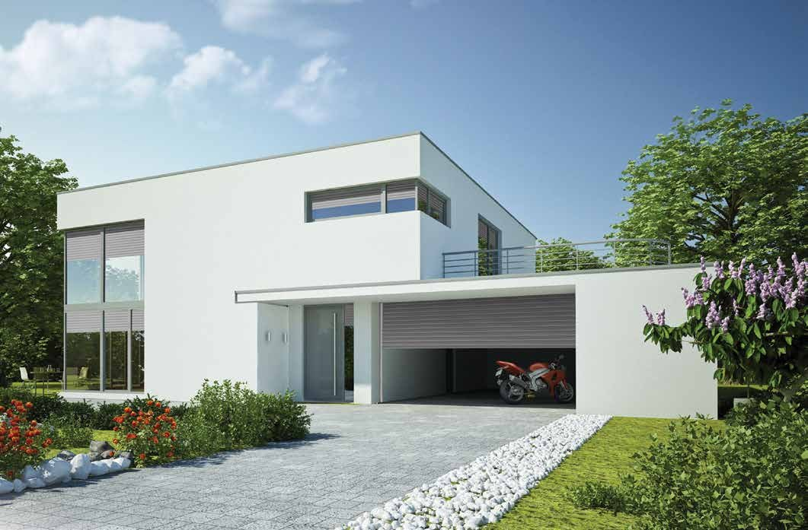

Nowoczesne rozwiązania, które łączą wygodę użytkowania, estetykę i bezpieczeństwo Twojego garażu.


Panele i pancerze wypełnione pianką poliuretanową
Solidna konstrukcja i zabezpieczenia na co dzień
Ręcznie, pilotem lub z aplikacji smart home
| Brama segmentowa | Brama rolowana | |
|---|---|---|
| Sposób otwierania | Brama unosi się pionowo i przesuwa pod sufitem | Pancerz zwija się do skrzynki nad otworem |
| Konstrukcja | Panele 40 lub 60 mm wypełnione pianką poliuretanową | Profile aluminiowe PA 77 wypełnione pianką poliuretanową |
| Izolacja termiczna | Bardzo dobra | Dobra |
| Montaż | Wewnątrz garażu, na prowadnicach | Skrzynka po wewnętrznej lub zewnętrznej stronie garażu |
| Obsługa | Ręczna lub automatyczna — napęd paskowy | Napęd rurowy z awaryjnym otwieraniem korbą |
Bramy segmentowe zapewniają bardzo dobrą izolację termiczną i szerokie możliwości dopasowania do wyglądu budynku, ale wymagają odpowiedniej przestrzeni pod sufitem i nad otworem. Bramy rolowane zajmują mniej miejsca, ponieważ pancerz chowa się w skrzynce nad wjazdem. To praktyczna opcja przy niskim nadprożu lub ograniczonej przestrzeni w garażu.
Tak, bramę garażową można dopasować kolorystycznie do okien, drzwi i pozostałych elementów stolarki. Dostępna paleta kolorów, różne struktury powierzchni oraz wzory pozwalają stworzyć spójną aranżację elewacji i podkreślić styl budynku.
Tak, wybrane modele bram garażowych można wyposażyć w przeszklenia, które doświetlają wnętrze garażu naturalnym światłem. Dostępne są różne kształty i układy przeszkleń, dzięki czemu można dopasować ich wygląd do stylu budynku.
Przed montażem bramy garażowej należy odpowiednio przygotować otwór – ściany po bokach i nadproże powinny być równe, stabilne i wykończone zgodnie z wymaganiami montażowymi. Warto również sprawdzić wymiary otworu oraz zapewnić wolną przestrzeń w garażu, niezbędną do prawidłowego montażu bramy.
W przypadku braku prądu bramę rolowaną można otworzyć korbą, korzystając z mechanizmu awaryjnego. Natomiast bramę segmentową można otworzyć ręcznie od środka. Jeśli nie ma innego wejścia do garażu, warto przy zakupie bramy dokupić dodatkową opcję: akumulator bądź wysprzęglenie awaryjne pozwalające otworzyć bramę z zewnątrz.
W ogrzewanym garażu najlepiej sprawdzi się brama segmentowa z panelami o dobrych właściwościach termoizolacyjnych.
Skontaktuj się z nami — doradzimy technicznie i przygotujemy kalkulację cenową.